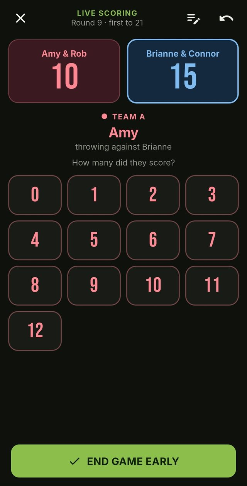
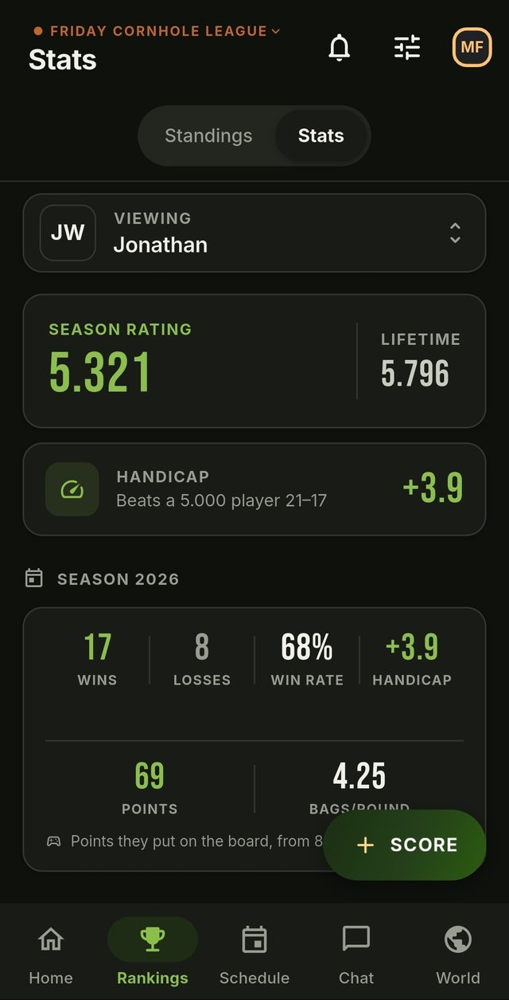
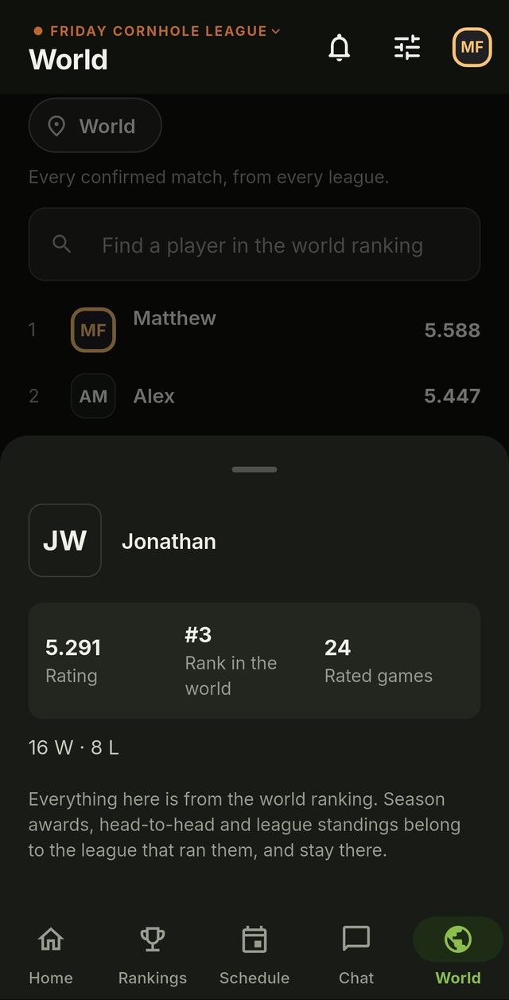
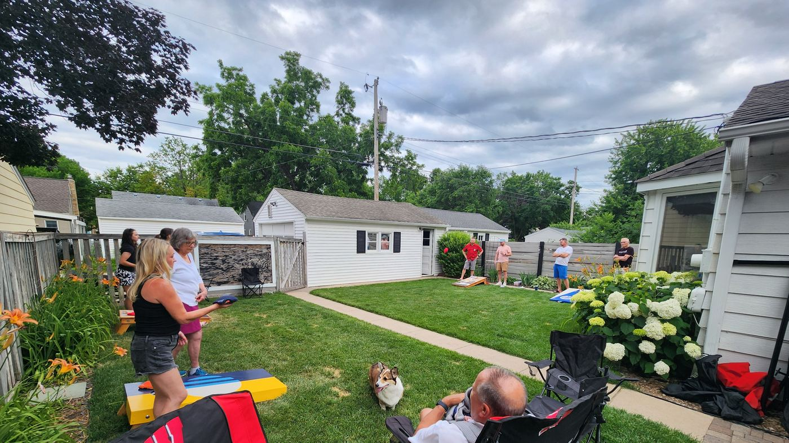

Rankings
Season and lifetime
Two ladders, because "best this year" and "best ever" are different arguments and both get had.
FCL turns your Cornhole game into a real league — ratings that mean something, rivalries fueled, and a record of every match. Built for a community league that plays regularly, and made to work for yours.
Free. No ads, no analytics — the only thing it tracks is the score.
A Friday night
Nobody wants to run a league — they want to play!
Choose the time and place. People RSVP for themselves, family and guests. A reminder goes out so nobody has an excuse to forget!
Enter points as you go and let the app do the math for you.
Every match shifts ratings depending on who played and the difference in score. Both sides confirm the results before they count.
Score as you play
Enter what each thrower put up. The app handles cancellation, the running total and the finish. Backyards have bad reception — scores save offline and sync themselves when you get signal back.


Ratings that react
Beating somebody better than you moves your rating further than beating somebody worse. So does the margin. What you end up with is a handicap — the margin you'd be expected to win by against an average player — which is the figure that settles arguments.
Jonathan's handicap, after 25 games this season. Against a 5.000 player he is expected to win 21–17. Everyone starts at 5.000 and the scale runs 0–10.
The rest of it
Rankings
Two ladders, because "best this year" and "best ever" are different arguments and both get had.
Head to head
Record, points, rating swing and every game you've shared. Find out who's got your number.
Balanced teams
Given who turned up, the app proposes the evenest game. No more lopsided nights because the same two always partner.
Badges & awards
Earned, not handed out — and season awards at the end: The Bag Baron, Glow Up, Ice in the Veins.
League chat
Results post themselves, so the trash talk lands next to the scoreline that earned it. Tuesday's argument still has Friday's evidence attached.
Private by default
Create a league, get a join code. Only people with it get in, and they only ever see your league.
Beyond your backyard
Your league's ladder is your league's. Alongside it, confirmed matches feed a world ranking across every league that plays — by town, by state, by country. Nobody has to be on it, and being on it changes nothing about your Friday.


Start a league in about a minute: name it, pick a colour, share the code. Everything else fills itself in as you play.
Free, with no ads and no analytics. Nothing about you is sold or followed anywhere.